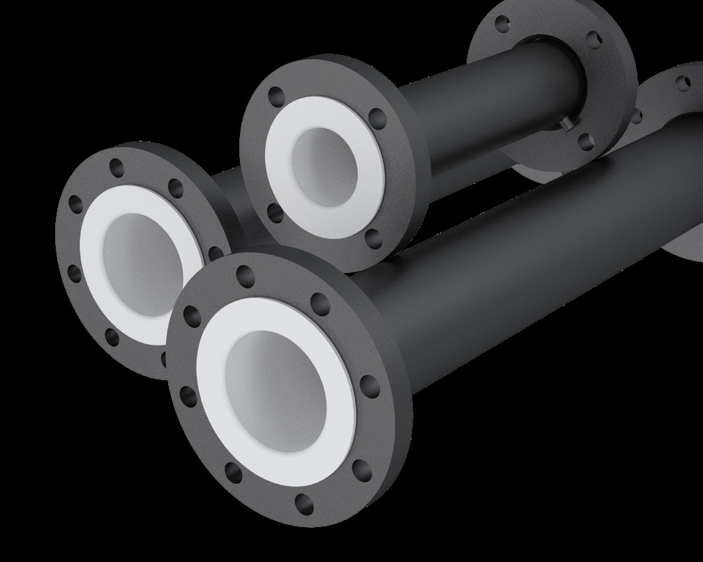

A comprehensive inspection and testing programme runs through the entire production process, combining internal audits with document review and witness testing.
Compliant with ASTM F1545, tested before dispatch.

Antico's fluoropolymer lined products are designed for highly corrosive applications and comply with International Standards such as ASTM F 1545. Fluoropolymer raw materials are certified to ASTM D4894/D4895 (PTFE), ASTM D3307 (PFA) and ASTM D2116 (FEP).
3.1 mill certifications to EN 10204 are available on request, as are FDA certifications for the fluoropolymer materials.

| Test | Reference | Quantum of Check | Report |
|---|---|---|---|
| Dimensional Check | Approved Drawing | 100% | Manufacturer's Test Report |
| Spark Test | 5000×E (E = liner thickness in mm), max. 15000V | 100% | Manufacturer's Test Report |
| Hydro / Pneumatic Pressure Test | As per standard | 100% | Manufacturer's Test Report |
| Visual Finish Check | As per standard | 100% | Manufacturer's Test Report |
A hydrostatic test is carried out on components with vent holes that have been injected or created from tubes; a pneumatic test applies depending on the lining technique used.
| Dimension | Range | Dimensional Tolerance | Angular Tolerance |
|---|---|---|---|
| Lengths | 0 – 315mm | +0 / -3mm | ±0.5° |
| Lengths | 315 – 1000mm | +0 / -4mm | ±0.5° |
| Lengths | 1000 – 6000mm | +0 / -5mm | ±0.5° |
| Diameters | NB 1"–4" | +0 / -3mm | ±0.5° |
| Diameters | NB 5"–8" | +0 / -4mm | ±0.5° |
| Diameters | NB 10"–24" | +0 / -5mm | ±0.5° |
We can share manufacturer's test reports and mill certifications on request.